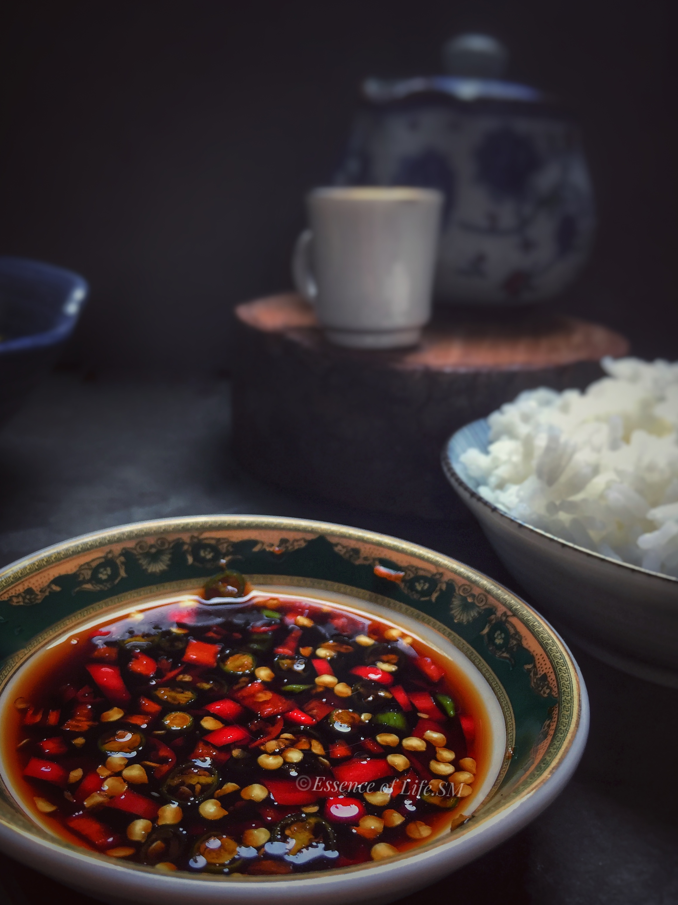

How to make La Jiang (Taiwanese spicy soy sauce)

Recipe description
This condiment, with its fiery kick of bird's eye chillies harmoniously melded with the savoury depth of soy sauce, captured my taste buds from the very first dip. Its simplicity belies its versatility, elevating everything from plain rice to succulent fried delicacies with its bold flavours.
Ingredients
Makes a small jarful
- Bird's eye chillies, thinly sliced
- 100ml light soy sauce
- 1 tsp sesame oil
- 1 clove of garlic, minced
- 1 tsp light chinese vinegar
Steps
- Begin by thinly slicing the bird's eye chillies, mincing the garlic, and placing them in a small serving dish or ramekin.
- Pour light soy sauce over the sliced chillies and garlic, ensuring they are well-coated. The amount of soy sauce can be adjusted according to your preference for saltiness and the desired consistency of the sauce.
- Add the sesame oil and vinegar.
- Give the condiment a gentle stir to incorporate all the ingredients evenly.
- Serve alongside your favourite dishes as a dipping sauce or condiment. Enjoy the spicy, savoury goodness with every bite!
Home